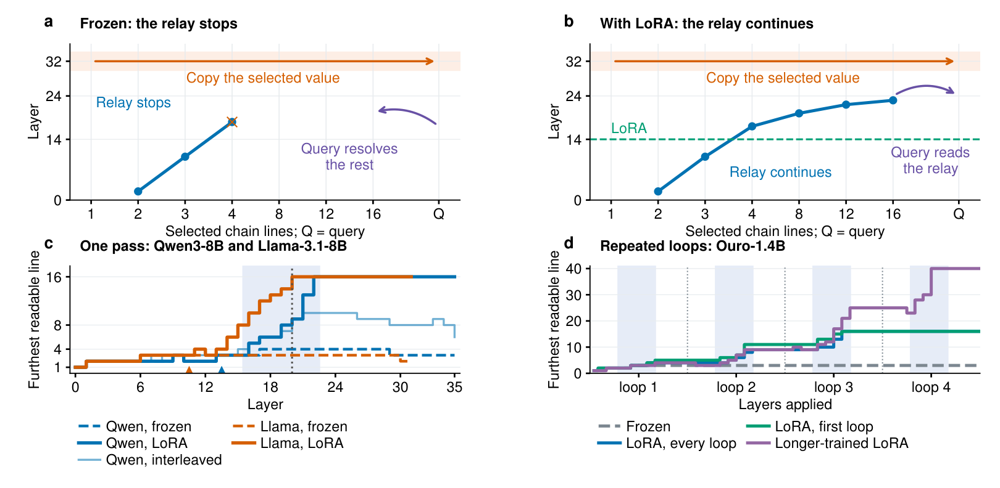
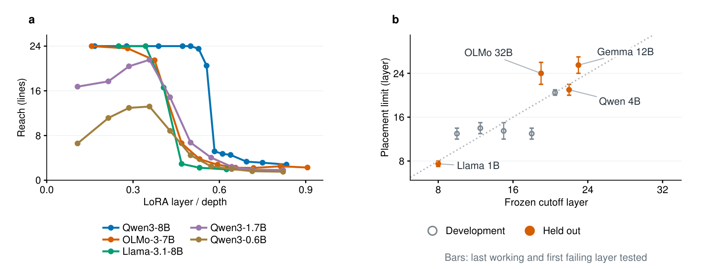

Transformers Stop Thinking Too Early, and a Tiny LoRA Fixes It
Give a pretrained transformer a chain of references in its prompt, K = apple, B = K, D = B, …, print(D), and ask for the answer directly. Every model we tried follows only a few lines and then guesses, whatever its size. The weights can do far more: one rank-8 LoRA at one early layer, under 0.01% of the parameters, lets Qwen3-8B follow 50-line chains in a single pass and lets a looped model follow at least 160.
Video (CN): a walkthrough of the paper in Chinese.
Watch the Chinese video on Bilibili →Watch the relay
Qwen3-8B reads a program with two chains of sixteen lines. A line lights up once its hidden state tells which chain it belongs to. Drag through the 36 layers, frozen and with the LoRA.
Measured, not simulated: a linear read-out at each line's pointer, fitted on 450 programs and scored on 150, counts a line as readable at 75% accuracy. Frozen, the relay reaches line 4 at layer 17 and stops. With the LoRA it runs through layers 16 to 22 to the last line, and the question can read it from layer 22.
Every model stops after a few lines
Thirteen base models from 0.6B to 32B parameters, with 16 to 64 layers, follow only 1.4 to 3.6 lines reliably. Depth does not help: OLMo-3-32B has twice the layers of OLMo-3-7B and both reach about 2.6 lines. DeepSeek-V4-Flash (292B MoE) reaches 4.0 lines and is near chance by six.
Looped models, which run their layers again, do not escape it. Ouro-1.4B gains one or two lines from its second loop and almost nothing after that: its reach is 0, 1.6, 2.3, 2.2 and 2.2 lines after one to five loops.
One rank-8 LoRA at one layer
We add a rank-8 LoRA to the residual stream at the input of one early layer, h ← s·h + BAh, and train only A, B and s. A penalty keeps the model's predictions on ordinary text: WikiText perplexity goes from 10.14 to 10.148. Every weight of the model stays frozen.
Qwen3-8B then answers 24-line chains 99% of the time instead of 15.5%. A LoRA trained on longer programs answers 98% of 40-line and 88% of 48-line chains. In looped models every loop now counts: Ouro-1.4B follows 60 lines after four loops and at least 160 after eight, and re-running Qwen3-8B's layers 14 to 22 with the LoRA lifts 64-line chains from 34% to 92%.
A relay in the middle layers
By default each line passes on which chain it belongs to for only two or three lines, the question resolves one or two more pointers itself, and a late layer copies the answer. With the LoRA, every line passes its chain on. This relay runs in one short range of middle layers: layers 16 to 22 of Qwen3-8B, and layers 7 to 15 of every loop of Ouro.
- In each of these layers, attention from a line reaches a little further up its own chain. Frozen heads that read only the parent line take over the longer reads.
- Cutting each line's attention to its parent line in layers 14 to 22 returns 6-, 8- and 12-line chains to chance (53, 48 and 55%). The same cut after the relay leaves 100, 100 and 98%.
- Removing the ten heads that read the parent line drops 16-line accuracy from 89% to 53%; ten random heads from the same layers leave 83%.
- Small looped transformers trained from scratch on these programs learn the same relay.

Early enough to start the relay
The LoRA works only while it can still start the relay. In Qwen3-8B, moving it from layer 20 to layer 21 drops reach from 20.5 to 5.2 lines. A measurement on the frozen model, the cutoff layer, located this limit in advance for three of four held-out models, within a preregistered tolerance.
Place matters far more than form. At layer 14, four different small changes all extend the chain; at layer 26, after the relay's layers, all four stay at chance.

| Change to Qwen3-8B | Parameters | Layer 14 | Layer 26 |
|---|---|---|---|
| LoRA on the residual stream | 65,537 | 96.5 | 54.5 |
| Projection LoRA (all seven projections) | 606,208 | 90.0 | 52.5 |
| FLAS-style low-rank flow, 3 steps | 65,872 | 94.0 | 54.0 |
| FLAS flow block, 1 step | 168M | 95.5 | 56.0 |
Multi-hop questions
On chains of fictional facts, a Qwen3-8B LoRA raises exact match from 41.2% to 97.4%, and six-hop questions, longer than any in training, from 23% to 88%. On MuSiQue, a LoRA trained on the benchmark at the earliest layer tested adds 11.4, 9.4 and 17.9 exact-match points to Qwen3-8B, OLMo-3-7B and Llama-3.1-8B, and 11.7 to Ouro-1.4B. At the latest layer tested it adds little in the standard models.
BibTeX
@article{jin2026thinking,
title = {Transformers Stop Thinking Too Early, and a Tiny {LoRA} Fixes It},
author = {Jin, Zehao and Deng, Ruixuan and Wang, Junran},
journal = {arXiv preprint arXiv:2609.36585},
year = {2026},
url = {https://arxiv.org/abs/2609.36585}
}